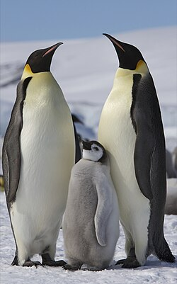

PINGÜINOS

Los pingüinos son aquellas aves que se engloban dentro de la familia Spheniscidae y a su vez dentro del orden de los Sphenisciformes. Se trata de un grupo de aves marinas no voladoras, en el que se pueden diferenciar hasta 18 especies diferentes las cuales que se distribuyen -exceptuando el pingüino de las islas Galápagos- exclusivamente en el Hemisferio Sur. A pesar de que no pueden volar, son grandes nadadores, por ello sus aletas se han adaptado al medio acuático, donde pueden llegar a alcanzar los 50 km/h. La cola les ayuda a mantener el equilibrio cuando caminan por tierra, y también pueden deslizarse por el hielo para ahorrar energía. Son animales ovíparos cuyo periodo de incubación puede prolongarse entre 33 y 62 días. Se comunican a través de su graznido, mediante el cual se reconocen unos a otros, y se alimentan básicamente de peces y plancton. Por lo general viven entre 10 y 20 años en colonias donde pueden haber miles de ejemplares conviviendo.
Si quieres saber más sobre pingüinos entra a este link de youtube
ESPECIES
Pingüino emperador
Son una de las especies más icónicas de pingüinos. Son conocidos por su distintivo plumaje blanco y negro, así como por su gran tamaño. Con una altura promedio de aproximadamente 1.1 metros (3.6 pies) y un peso que oscila entre los 22 y 45 kilogramos (48 a 99 libras). Son nativos de la Antártida y son capaces de soportar condiciones extremadamente frías, gracias a su gruesa capa de grasa y plumaje denso.
Pequeño pingüino azul
El pingüino azul, también conocido como pingüino pequeño azul o pingüino de El Cabo, es una de las especies más pequeñas de pingüinos. Con una altura promedio de alrededor de 30 a 40 centímetros (12 a 16 pulgadas) y un peso que oscila entre los 1 y 1.5 kilogramos (2.2 a 3.3 libras). Se distingue por su plumaje azul-grisáceo en la espalda y blanco en el vientre, con una franja blanca que se extiende desde la parte superior de los ojos hasta debajo de la mandíbula. Son nativos de las regiones costeras de Australia, Nueva Zelanda, Sudáfrica y las islas circundantes.
Pingüino adelia
El pingüino adelaida, llamado así en honor a la esposa de uno de los exploradores franceses que los descubrió, es una especie de pingüino que se encuentra principalmente en la región antártica. Es fácilmente reconocible por su plumaje negro en la espalda y cabeza, con un vientre blanco y un parche blanco alrededor de los ojos. Los pingüinos adelaida tienen una altura promedio de aproximadamente 70 centímetros (27.5 pulgadas) y un peso que oscila entre 3.6 a 6 kilogramos (8 a 13 libras).
Pingüino gentoo
El pingüino gentoo es una de las especies de pingüinos más reconocibles y ampliamente distribuidas en el Hemisferio Sur. Se caracteriza por su plumaje negro en la espalda y blanco en el vientre, con una banda blanca distintiva que cruza su cabeza desde el ojo hasta la parte posterior. Tienen un pico largo y delgado y patas rosadas. Con una altura promedio de alrededor de 70 centímetros (28 pulgadas) y un peso que oscila entre los 4.5 y 6 kilogramos (10 a 13 libras).
CURIOSIDADES
- Tradicionalmente, el número de especies de pingüinos a nivel mundial es de 17. En 2006, se cambió este número a 18, cuando se empezó a reconocer al pingüino saltarrocas como dos especies distintas: el pingüino saltarrocas austral y el pingüino saltarrocas norteño.
- El adorable pingüino azul, el cual se encuentra cerca de las costas de Australia y Nueva Zelanda, mide entre 12-14 pulgadas (30.48 - 35.56 cm) de altura.
- Cada temporada de apareamiento, los pingüinos escogen una pareja con quien se mantienen durante la temporada completa. Sin embargo, un pingüino puede o no escoger la misma pareja el año siguiente.
- El pingüino emperador crece hasta las 45 pulgadas (114.3 cm) de estatura, alcanzando casi 4 pies (121.92 cm) de altura.
MI EXPERIENCIA CONOCIENDO PINGÜINOS POR PRIMERA VEZ
Hace unas semanas realizamos una visita a la ciudad de Guadalajara para conocer empresas relacionadas a mi carrera.
En la estadia nos permitimos conocer un poco de la ciudad llendo a diversos lugares recreativos, uno de ellos fue el zoologico, en donde se me dio la oportunidad de tener mi primer encuentro con esta especie, fue un momento super emotivo que me llevo guardado dentro de mi corazón.
¡Feliz de vivir esta experiencia!